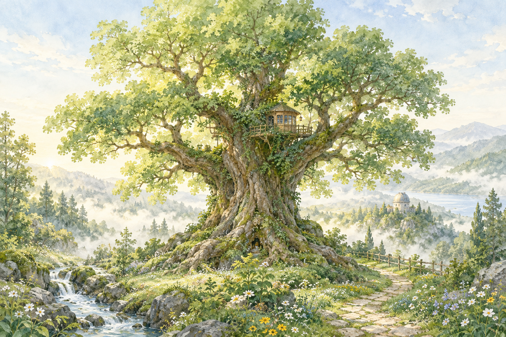

A SMALL EXPERIMENT IN THE FOREST
触れる霧。
つかまえなくても、少しだけ触れてみる。
木漏れ日の下で、集めて、混ぜて、散らして。
指の先から、森の空気が変わっていきます。

木漏れ日の観測室ゆっくりなぞると、霧が指のそばへ集まります。
指やマウスでなぞって遊べます。キーボードでは霧の画面を選び、矢印キーとスペースで操作できます。
「光の波」を押すと、霧の中に小さな光が広がります。
森の観測メモ
同じ霧でも、触れ方で違って見える。
集まったり、ほどけたり、また出会ったり。
答えを急がず、変わっていく様子を眺めてみる。
それも、森研究所の小さな研究です。
霧理論から生まれた概念的な遊びです。意識を科学的に測定するものではありません。
← 霧理論のことばへ戻る